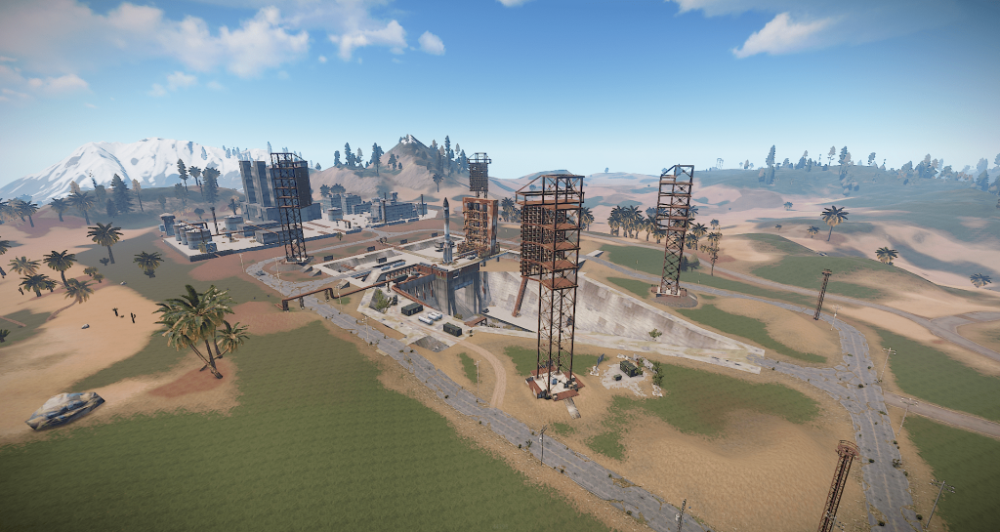

Космодром
После того, как разработчики из студии Facepunch ввели систему компонентов, РТ (рэдтаун) в игре стали
важной частью выживания и игрового процесса в целом. Ведь именно в радиационных городах можно будет
найти самое лучшее снаряжение в игре. К тому же, после ввода новой механики, РТ пополнились новыми
точками с лутом. Космодром – это самое большое РТ, которое считается самым опасным и сложным. И первым
делом следует знать, что ракетный завод делится на две части: на пусковую установку и офисы. Начинать
всегда следует с первого, поскольку это самая простая часть завода.
Пусковая установка
Пусковая установка – открытая территория, на которой находятся крупные подземные помещения и огромная
ракета в центре. На этой половине РТ находятся две крупные точки с лутом и парочка небольших. Всего в
общей сумме на этой половине космодрома спавнится около 15 сундуков, но большая часть из них – это
деревянные ящики. Поэтому для начала следует ознакомиться с каждой точкой перед тем, как узнаете, как
проще всего залутать их все.

Ключевые точки с лутом
Первая крупная точка с лутом находится в подземке. Плюс точки в том, что внутри появляются сундуки
высокого тира. Однако, чтобы добраться в это место, придётся не только изрядно побегать по всей карте
космодрома, но и ещё проявить ловкость, скользя по балкам.
Вторая крупная точка, где тоже спавнится немалое количество ценного лута – это огромная
металлоконструкция по центру с двумя рабочими лифтами. На первый взгляд может показаться, что залутать
это место трудно, но, если знать как, никаких трудностей не возникнет.
Оставшиеся точки с лутом не такие «жирные», как две вышеупомянутые, но зато до них добраться проще
простого, потому что все они находятся в будках, которые разбросаны по всей территории ракетного завода.
Порядок лутания на пусковой установке
Этап – 1: Деревянные будки
Первым делом нужно добраться до подземки и по пути залутать первые три деревянные будки. Входить на
территорию пусковой установки следует с центрального входа. В первой будке будет стоять один деревянный
ящик, поэтому лутаете его и двигаетесь к следующему. Поскольку первые две ключевые будки будут стоять
рядом, заблудиться трудно. Во второй будке будет стоять ящик с первым рычагом: если он горит красным –
дёргаете, если горит зелёным – оставляете в покое. Зачем это делать? Он поможет открыть двери в
подземке. Следом после этого двигайтесь вперёд от входа на РТ. К слову, по пути можно ломать бочки, с
которых падает разный второстепенный лут. От перевёрнутого грузовика поверните в правую сторону. Идите
вперёд вплоть до того, пока не увидите поворот направо – тут будет новая будка с деревянным ящиком.
Этап – 2: Подземка с бетонными тоннелями
Когда залутаете третью деревянную будку, внимательно осмотритесь вокруг и отыщите бетонный тоннель за
столбами. Входите внутрь, поворачивайте сразу влево, открывайте двери и активируйте второй рубильник.
После этого можно вернуться обратно на территорию подземки. Можно никуда не спешить, потому что
рубильник сам себя не повернёт, поэтому можно лутать всё, что только можно по пути, при этом стараясь не
попасться под танк, который ездит по поверхности. Внутри тоннелей также будут стоять деревянные ящики
(всего их будет два). Поскольку в этом месте путь абсолютно линеен, пропустить его сложно.
Этап – 3: Металлоконструкция (Нижняя часть)
Пора теперь выбраться на поверхность, чтобы добраться до второй крупной точки с лутом. Главное в
процессе не попадитесь в поле видимости танка. В центре внимательно осмотритесь, потому что чуть ниже
находится металлический бортик и вот на него следует спрыгнуть. Чтобы не получить урона при прыжке,
прыгайте на перила. Следом спускайтесь по лестнице. На этом этапе нужно будет совершить большой прыжок
на соседний металлический бортик, который на метр ниже. Как только удастся добраться до противоположной
стороны, активируйте таймер, открывайте двери, прыгайте на металлическую балку и по ней аккуратно
перебирайтесь на другую сторону. Теперь остаётся нажать на кнопку и войти в ключевую лутовую комнату
этой части ракетного завода. И помните, что, если не успеете за отведённое время перебраться на другую
сторону, придётся заново активировать таймер. Но, так или иначе, внутри будет 4-5 сундуков с ценным
лутом. Напоследок открывайте двери и спускайтесь по стене аккуратно вниз, чтобы залутать последний ящик.
Этап – 4: Металлоконструкция (Верхняя часть)
В этой части спавнится не так уж и много лута, но зато есть парочка деревянных ящиков и огромная куча
бочек. Плюс лутается верхняя часть быстро, поэтому можно добыть много полезных предметов за короткий
промежуток времени. Начинать подъём на верхнюю часть металлоконструкции следует по лестнице на первом
этаже. На первой платформе будут лишь бочки, поэтому, когда их залутаете, поднимайтесь при помощи лифта
выше. Поскольку лифты опускаются и поднимаются сами по себе, остальные платформы спокойно залутать не
получится, поскольку лифт может уйти без вас. Ловкие игроки могут попытаться при подъёме наверх разбить
бочки, а при спуске быстро собирать лут, пока лифт медленно опускается вниз. Но на практике лучше
подняться на самую верхнюю часть и спускаться путём прыжков вниз, потому что только в таком случае можно
будет заодно собрать лут из деревянных ящиков. Прыгать следует лишь на перила. Однако если будет
достаточно медикаментов, тогда можно прыгать и на платформы, после чего восполнять потерянное здоровье.